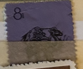
| SOURCE | TITLE| IMAGE MATCH | click to source page |
| eBay | 3 CENT LIBERTY STAMPS, USED - RARE! | eBay | 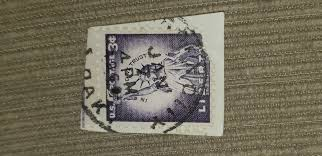 |
| Elemintal | Chacmool & "The Trench" Mural 100 Pesos Mexico Authentic Banknote Mone – elemintalshop | 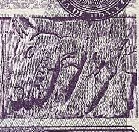 |
| Stamp Collecting Blog | Introduction to Belgian precancels | 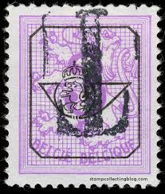 |
| Fook Sang Tong | Rare Vintage Postage stamps WIN THE WAR | 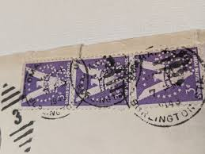 |
| I'm Reggie! ⚡️⚡️⚡️ | 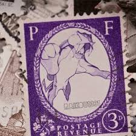 | |
| eBay | 6 X CHRISTMAS ANGELS POSTAGE STAMP GREAT BRITAIN 6 1/2p 1971-1980 Brand New | eBay | 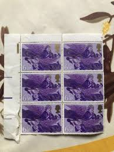 |
| Is the upside down hand stamp genuine? | 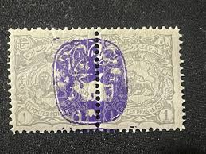 | |
| Numista | 10 Pounds - Sudan – Numista | 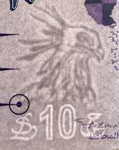 |
| eBay | Business, Industry, Careers Nigerian Postal Stamps (Pre - 1960) for sale | eBay | 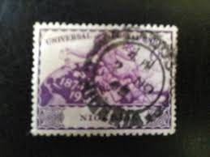 |
| Stamp material and color comparison | 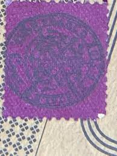 | |
| Etsy | 10 Amethyst Mineral Heritage Stamps, 1974 Unused Postage Stamps, 10 Cent Stamps, Vintage Collectible Stamps - Etsy | 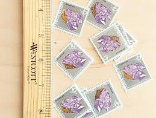 |
| What are the marks on my 2009 series A $100 bill with an old time car and a leaf? | 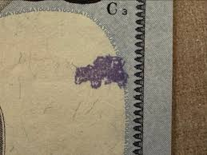 | |
| italianstamps.co.uk | Italian Stamps - Post-War | 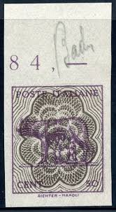 |
| YouTube | A Korean Stamp Album & A Spain Album - YouTube | 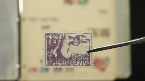 |
| devisu-swiss.com | stamps | 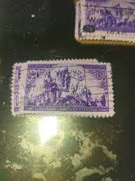 |
| The Fuzzy Felt | Skagit Valley 1994 Tulip Festival Vintage Mallary Print Crewneck Sweat – The Fuzzy Felt | 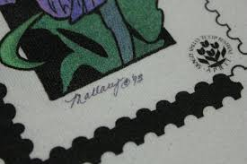 |
| YouTube | YouTube | 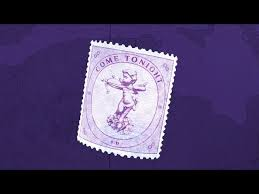 |
| Stamps By Themes | France International Sale - 66 Page 45 | 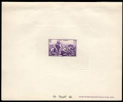 |
| Redbubble | New York City Stamp" Poster for Sale by pda1986 | Redbubble | 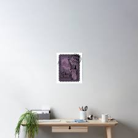 |
| Dreamstime.com | Pounds Shillings Stock Photos - Free & Royalty-Free Stock Photos from Dreamstime | 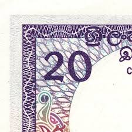 |
| eBay | Used Block Central African Republic Stamps for sale | eBay | 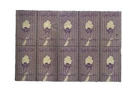 |
| HipStamp | 501 3 cents Washington, Light Violet ty1 Stamp used EGRADED VF-XF 85 | United States, General Issue Stamp / HipStamp | 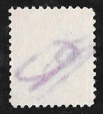 |
| Violet Evergarden movie review with emotional impact | 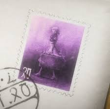 | |
| Webstore.com | UNITED STATES 2006 – Used Sc. 3998. CV $0.25 | Stamps (Postage Stamps) | Buy & Sell at Webstore | 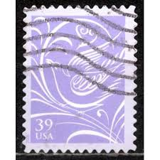 |
| YouTube | Magdalene - II - YouTube | 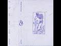 |
| Free stamp catalogue | Stamps from Tunisia - Freestampcatalogue.com - The free online stampcatalogue with over 500.000 stamps listed. | |
| Numista | 25 Roubles (Far Eastern Republic) - Far Eastern Republic – Numista | 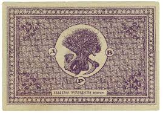 |
| Alamy | Uk postage stamp isolated hi-res stock photography and images - Page 8 - Alamy | 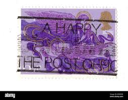 |
| eBay | Nature New Zealand Stamps for sale | eBay | 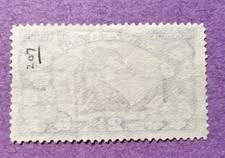 |
| The U.S. Currency Education Program (.gov) | $5 Note Issued 2008 to Present | 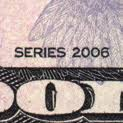 |
| Finding plate numbers on basic stamps can be challenging | 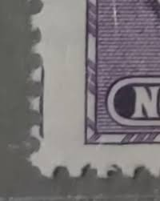 | |
| Stamp collection with nice cancelation for display | 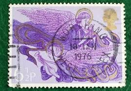 | |
| commonwealthstamps.com | Montserrat 1949 Universal Postal Union SG 119 Fine Used | 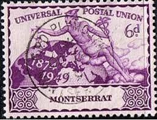 |
| Mark Zhixun Hu (@mark.zhixun.hu) • Facebook, Connect with friends | 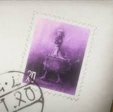 | |
| MakerWorld | Violet Evergarden Stamp - Free 3D Print Model - MakerWorld | 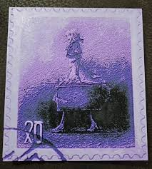 |
| YouTube | Northern Ireland Ulster Bank 20 pounds IBNS Banknote of the Year 2020 - YouTube | 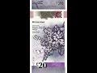 |
| Flickr | 1951 - Heraldic lion - 60 centime | Number on Heraldic Lion … | Flickr | 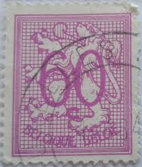 |
| GetArchive | Austria 1854 IIIa NTZL - postal stamp - PICRYL - Public Domain Media Search Engine Public Domain Image |  |
| eBay UK | Historical Figures Postage Stamps for sale | eBay UK | 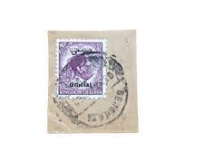 |
| Federal University of Agriculture, Abeokuta | SOMALILAND PROTECTORATE | 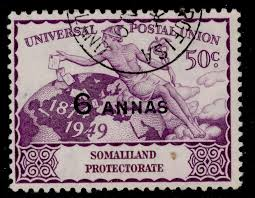 |
| HistoryForSale | George Bernard Shaw - Autograph Note Signed 04/26/1923 | HistoryForSale Item 153570 | 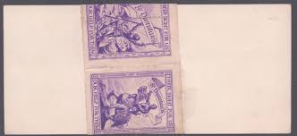 |
| ProBoards | Machin Tagging | The Stamp Forum (TSF) | 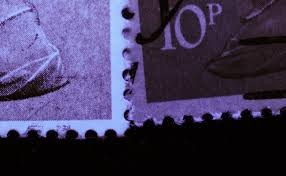 |
| CollectorBazar | PERSIA IRAN EARLY LION & SWORD MONOGRAM 10 CH PERSIAN VIOLETE CHOP OVERPRINT | 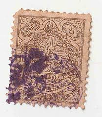 |
| HipStamp | Scott #72 Ireland | Europe - Ireland, General Issue Stamp / HipStamp | 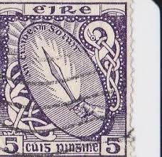 |
| Federal University of Agriculture, Abeokuta (FUNAAB) | HONG KONG POSTAGE DUE COVERS | 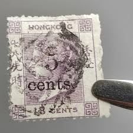 |
| eBay | Historical Figures 1p British Victoria Stamps for sale | eBay | 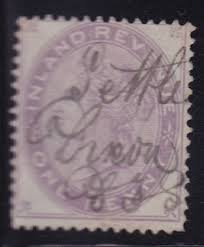 |
| HipStamp | France 115: 10c Liberty, Equality, Fraternity, perfin, used, F | Europe - France & Colonies, General Issue Stamp / HipStamp | 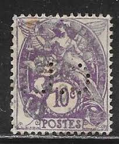 |
| iStock | Faroe Islands Faroese Króna 200 Banknotes Two Hundred Faroese Króna Closeup And Macro View Of The Faroese Króna Tracking And Dolly Shots 200 Faroese Króna Banknote Observe And Reserve Side Faroese Króna | 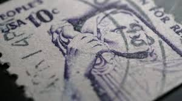 |
| Tripadvisor | Bare Bones Chocolate (2026) - All You MUST Know Before You Go (with Reviews) | 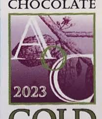 |
| wopa-plus.com | Myths and Flora - Cerberus and Aconitum Napellus | Bosnia and Herzegovina - Mostar Stamps | Worldwide Stamps, Coins Banknotes and Accessories for Collectors | WOPA+ | 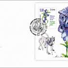 |
| Shutterstock | Karnal Haryana India -july 4th 2022-closeup Stock Photo 2175275289 | Shutterstock | 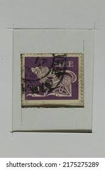 |
| eBay | Uncirculated US Paper Money 10c Denomination for sale | eBay | |
| Alamy | Old french postage stamp hi-res stock photography and images - Page 15 - Alamy | |
| bdenzer is an artist, designer, publisher, and educator whose practice spans bookmaking, visual experimentation, and playful investigations into value, form, and physicality. Through collecting, collaging, and clever formal gestures, Ben explores the | ||
| Klasiskās mākslas galerija ANTONIJA | Untitled - Abstraction (Themes) - Classic art gallery ANTONIJA | |
| Shutterstock | Ireland Post Stamp: Over 1,502 Royalty-Free Licensable Stock Photos | Shutterstock | |
| Blogger.com | Lithuanian philately blog: January 2011 | |
| Alamy | Face beard turban hi-res stock photography and images - Alamy | |
| Collect GB Stamps | pb3002 Christmas 1992 |